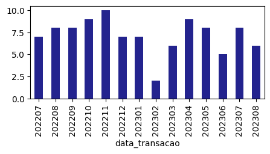

from featime.featime import *featime
Criação de variáveis em janelas de tempo.
import pandas as pd
import random
import numpy as np
import matplotlib.pyplot as plt
pd.options.display.max_columns = NoneCriando variáveis numéricas e categóricas
Install
pip install featimeHow to use
Criando dataframe aleatório
Criando DataFrame com variáveis categóricas e numéricas
# Criando o DataFrame
data = {
'ID_cliente': [random.choice(list(range(1, 101)))for _ in range(100)],
'data_transacao': [random.choice([202207, 202208, 202209, 202210, 202211, 202212, 202301, 202302, 202303, 202304, 202305,
202306, 202307, 202308]) for _ in range(100)],
'Feat_cat': [random.choice(['A', 'B', 'C']) for _ in range(100)],
'Feat_num1': np.random.randint(0, 100, size=100),
'Feat_num2': np.random.randint(0, 100, size=100)
}
df = pd.DataFrame(data)df.head()| ID_cliente | data_transacao | Feat_cat | Feat_num1 | Feat_num2 | |
|---|---|---|---|---|---|
| 0 | 43 | 202211 | A | 50 | 64 |
| 1 | 53 | 202210 | B | 81 | 1 |
| 2 | 30 | 202307 | A | 47 | 86 |
| 3 | 13 | 202305 | B | 81 | 21 |
| 4 | 41 | 202207 | B | 56 | 61 |
O Dataframe criado tem o ID do cliente aleatório, podendo se repetir em datas diferentes,
df.groupby('ID_cliente')['data_transacao'].value_counts().sort_values(ascending=False)ID_cliente data_transacao
64 202304 3
26 202209 2
92 202303 2
1 202208 1
66 202304 1
..
36 202211 1
35 202301 1
30 202209 1
202307 1
100 202306 1
Name: count, Length: 96, dtype: int64Ajustando datas
A variável data_transacao é a data que ocorreu algum tipo de transação na base. Para o nosso exemplo, teremos a seguinte distribuição das datas:
plt.figure(figsize=(5,2))
df['data_transacao'].value_counts().sort_index().plot.bar(color = '#23238E')<Axes: xlabel='data_transacao'>
As datas suportadas precisam estar no formato YYYYMMDD. Por isso, vamos modificar a transação para o primeiro dia dos mês,
df['data_transacao'] = df['data_transacao'].apply(lambda x: str(x)+'01')Para criarmos variáveis em janelas, vamos criar uma data de referência chamada “safra_ref”. Ela também precisa estar no formato YYYYMMDD
df['safra_ref'] = '20230701'Variáveis numéricas
A partir do ID_cliente do cliente e da data de transação, agrupamos as entradas e calculamos variáveis do tipo ‘sum’, ‘mean’ e ‘count’ que são fornecidas em forma de lista em ‘operations’ para variáveis numéricas. As variáveis utilizadas são listadas em ‘value_var’ e calculadas nas janelas de tempo em ‘window’ para a data de referência em ‘ref_time_var’.
id_cols = ['ID_cliente','safra_ref']
trns_time = 'data_transacao'
ref_time = 'safra_ref'
value_var = ['Feat_num1','Feat_num2']
window = [-1,-2,-3,-6,-9,-12,-15]
operations = ['sum','mean','count']
df_vars_num = featime_in_time(df,id_cols,trns_time,ref_time,value_var,window,operations)df_vars_num.head()| ID_cliente | safra_ref | Feat_num1_sum_1M | Feat_num1_mean_1M | Feat_num1_count_1M | Feat_num1_sum_2M | Feat_num1_mean_2M | Feat_num1_count_2M | Feat_num1_sum_3M | Feat_num1_mean_3M | Feat_num1_count_3M | Feat_num1_sum_6M | Feat_num1_mean_6M | Feat_num1_count_6M | Feat_num1_sum_9M | Feat_num1_mean_9M | Feat_num1_count_9M | Feat_num1_sum_12M | Feat_num1_mean_12M | Feat_num1_count_12M | Feat_num1_sum_15M | Feat_num1_mean_15M | Feat_num1_count_15M | Feat_num2_sum_1M | Feat_num2_mean_1M | Feat_num2_count_1M | Feat_num2_sum_2M | Feat_num2_mean_2M | Feat_num2_count_2M | Feat_num2_sum_3M | Feat_num2_mean_3M | Feat_num2_count_3M | Feat_num2_sum_6M | Feat_num2_mean_6M | Feat_num2_count_6M | Feat_num2_sum_9M | Feat_num2_mean_9M | Feat_num2_count_9M | Feat_num2_sum_12M | Feat_num2_mean_12M | Feat_num2_count_12M | Feat_num2_sum_15M | Feat_num2_mean_15M | Feat_num2_count_15M | |
|---|---|---|---|---|---|---|---|---|---|---|---|---|---|---|---|---|---|---|---|---|---|---|---|---|---|---|---|---|---|---|---|---|---|---|---|---|---|---|---|---|---|---|---|---|
| 0 | 43 | 2023-07-01 | NaN | NaN | NaN | NaN | NaN | NaN | NaN | NaN | NaN | 1.0 | 1.0 | 1.0 | 123.0 | 30.75 | 4.0 | 158.0 | 31.6 | 5.0 | 158.0 | 31.6 | 5.0 | NaN | NaN | NaN | NaN | NaN | NaN | NaN | NaN | NaN | 92.0 | 92.0 | 1.0 | 250.0 | 62.5 | 4.0 | 305.0 | 61.0 | 5.0 | 305.0 | 61.0 | 5.0 |
| 1 | 53 | 2023-07-01 | NaN | NaN | NaN | NaN | NaN | NaN | NaN | NaN | NaN | NaN | NaN | NaN | 81.0 | 81.00 | 1.0 | 111.0 | 55.5 | 2.0 | 111.0 | 55.5 | 2.0 | NaN | NaN | NaN | NaN | NaN | NaN | NaN | NaN | NaN | NaN | NaN | NaN | 1.0 | 1.0 | 1.0 | 97.0 | 48.5 | 2.0 | 97.0 | 48.5 | 2.0 |
| 2 | 30 | 2023-07-01 | NaN | NaN | NaN | NaN | NaN | NaN | NaN | NaN | NaN | NaN | NaN | NaN | NaN | NaN | NaN | 69.0 | 34.5 | 2.0 | 69.0 | 34.5 | 2.0 | NaN | NaN | NaN | NaN | NaN | NaN | NaN | NaN | NaN | NaN | NaN | NaN | NaN | NaN | NaN | 82.0 | 41.0 | 2.0 | 82.0 | 41.0 | 2.0 |
| 3 | 13 | 2023-07-01 | NaN | NaN | NaN | 81.0 | 81.0 | 1.0 | 81.0 | 81.0 | 1.0 | 81.0 | 81.0 | 1.0 | 142.0 | 71.00 | 2.0 | 142.0 | 71.0 | 2.0 | 142.0 | 71.0 | 2.0 | NaN | NaN | NaN | 21.0 | 21.0 | 1.0 | 21.0 | 21.0 | 1.0 | 21.0 | 21.0 | 1.0 | 43.0 | 21.5 | 2.0 | 43.0 | 21.5 | 2.0 | 43.0 | 21.5 | 2.0 |
| 4 | 41 | 2023-07-01 | NaN | NaN | NaN | NaN | NaN | NaN | NaN | NaN | NaN | 35.0 | 35.0 | 1.0 | 35.0 | 35.00 | 1.0 | 91.0 | 45.5 | 2.0 | 91.0 | 45.5 | 2.0 | NaN | NaN | NaN | NaN | NaN | NaN | NaN | NaN | NaN | 43.0 | 43.0 | 1.0 | 43.0 | 43.0 | 1.0 | 104.0 | 52.0 | 2.0 | 104.0 | 52.0 | 2.0 |
df[df['ID_cliente']==43]| ID_cliente | data_transacao | Feat_cat | Feat_num1 | Feat_num2 | safra_ref | |
|---|---|---|---|---|---|---|
| 0 | 43 | 20221101 | A | 50 | 64 | 20230701 |
| 26 | 43 | 20221201 | C | 24 | 63 | 20230701 |
| 63 | 43 | 20221001 | C | 48 | 31 | 20230701 |
| 79 | 43 | 20220801 | C | 35 | 55 | 20230701 |
| 81 | 43 | 20230101 | C | 1 | 92 | 20230701 |
Variáveis categóricas
Para variáveis categóricas, as operações são ‘nunique’ e mode.
id_cols = ['ID_cliente','safra_ref']
trns_time = 'data_transacao'
ref_time = 'safra_ref'
value_var = ['Feat_cat']
window = [-1,-2,-3,-6,-9,-12,-15]
operations = ['nunique', mode]
df_vars_cat = featime_in_time(df,id_cols,trns_time,ref_time,value_var,window,operations)df_vars_cat.head()| ID_cliente | safra_ref | Feat_cat_nunique_1M | Feat_cat_mode_1M | Feat_cat_nunique_2M | Feat_cat_mode_2M | Feat_cat_nunique_3M | Feat_cat_mode_3M | Feat_cat_nunique_6M | Feat_cat_mode_6M | Feat_cat_nunique_9M | Feat_cat_mode_9M | Feat_cat_nunique_12M | Feat_cat_mode_12M | Feat_cat_nunique_15M | Feat_cat_mode_15M | |
|---|---|---|---|---|---|---|---|---|---|---|---|---|---|---|---|---|
| 0 | 43 | 2023-07-01 | NaN | NaN | NaN | NaN | NaN | NaN | 1.0 | C | 2.0 | C | 2.0 | C | 2.0 | C |
| 1 | 53 | 2023-07-01 | NaN | NaN | NaN | NaN | NaN | NaN | NaN | NaN | 1.0 | B | 1.0 | B | 1.0 | B |
| 2 | 30 | 2023-07-01 | NaN | NaN | NaN | NaN | NaN | NaN | NaN | NaN | NaN | NaN | 2.0 | B | 2.0 | B |
| 3 | 13 | 2023-07-01 | NaN | NaN | 1.0 | B | 1.0 | B | 1.0 | B | 2.0 | A | 2.0 | A | 2.0 | A |
| 4 | 41 | 2023-07-01 | NaN | NaN | NaN | NaN | NaN | NaN | 1.0 | C | 1.0 | C | 2.0 | B | 2.0 | B |
df[df['ID_cliente']==43]| ID_cliente | data_transacao | Feat_cat | Feat_num1 | Feat_num2 | safra_ref | |
|---|---|---|---|---|---|---|
| 0 | 43 | 20221101 | A | 50 | 64 | 20230701 |
| 26 | 43 | 20221201 | C | 24 | 63 | 20230701 |
| 63 | 43 | 20221001 | C | 48 | 31 | 20230701 |
| 79 | 43 | 20220801 | C | 35 | 55 | 20230701 |
| 81 | 43 | 20230101 | C | 1 | 92 | 20230701 |